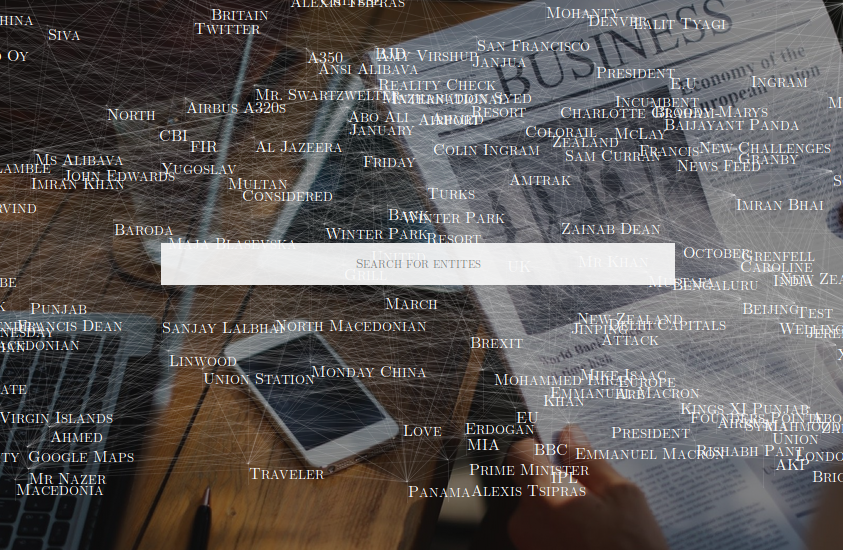

I am curious about everything in general. Complicated problems that require an innovative approach are the kind of problems I like to solve the most. Few of the topics I have worked on and know about are listed here.
I hail from Kolkata. I was born in Jamshedpur, completed my college from Chennai. Currently based out of Bangalore.

What if we could get the sequence of events that have been reported in the news for any current incident or for any entity ever mentioned in news?
This personal project of mine hopes to be able to deliver on this. To know what makes it interesting, read the full text.
Utilizing a TURN server setup using COTURN, and using Google STUN servers to utilize WebRTC for information retrieval and control of drones. This is a concept, for which a POC is under development. It is currently a general computer to computer interaction.
This is to be replicated through a Development Board(Arduino Flora or AdaFruit) to be able to work with a drone controller(Flight Controller, Motor Drivers, etc.)
The reason for attempting such a thing, is to be able to operate wherever there is a good mobile network(GPRS).